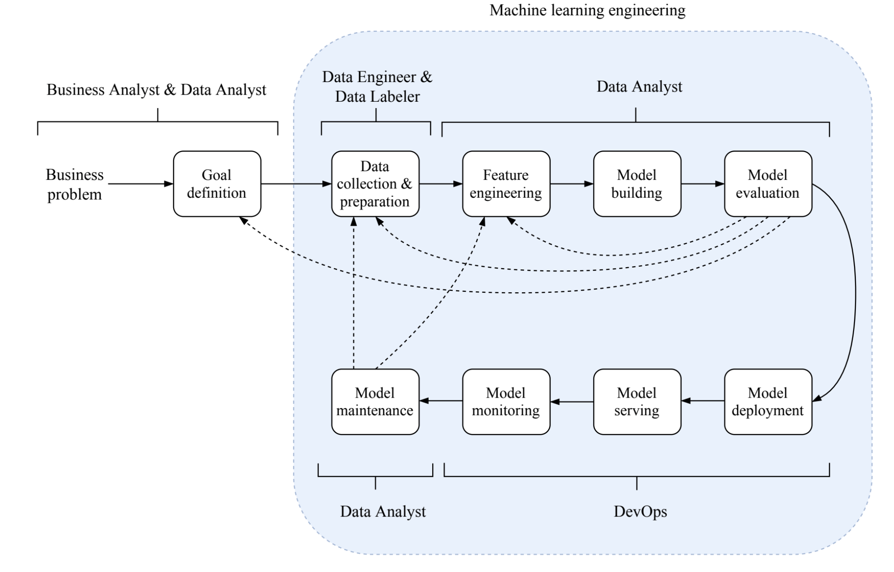
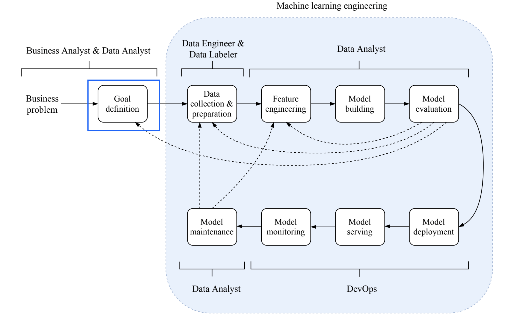
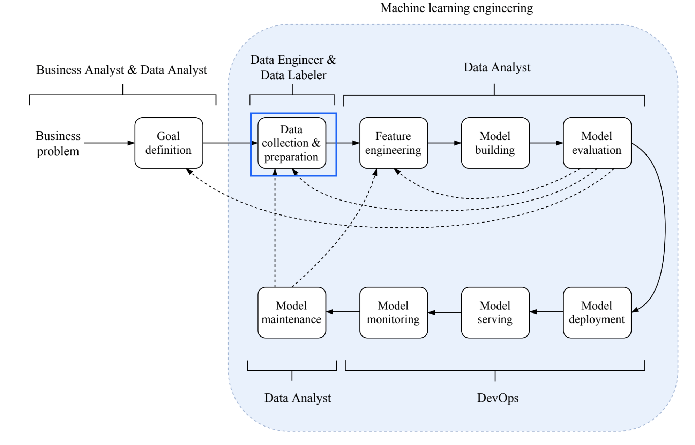
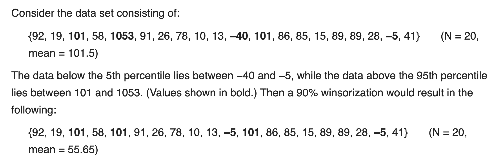
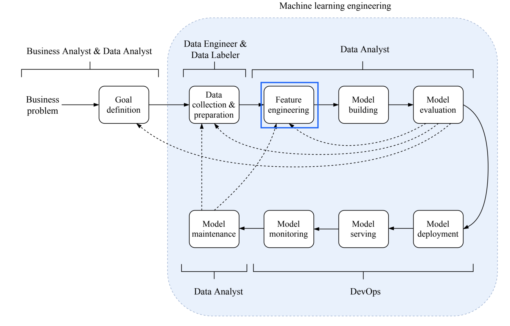
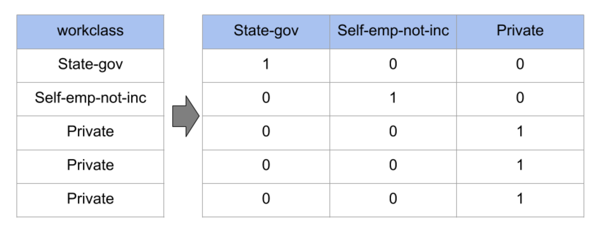
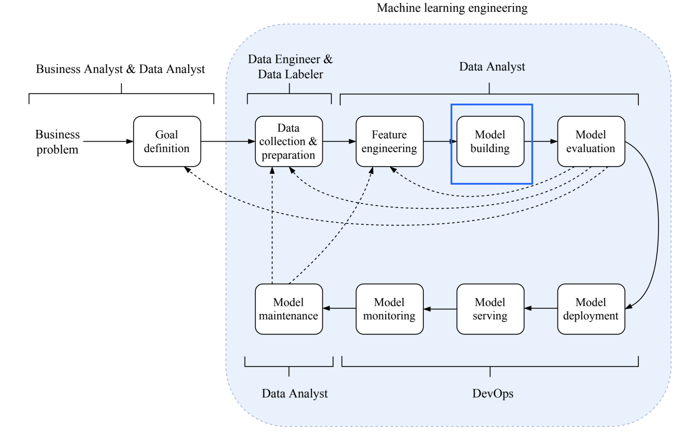
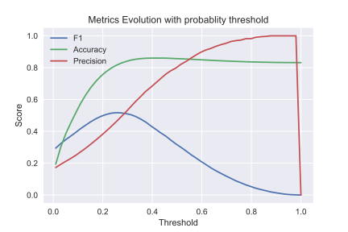
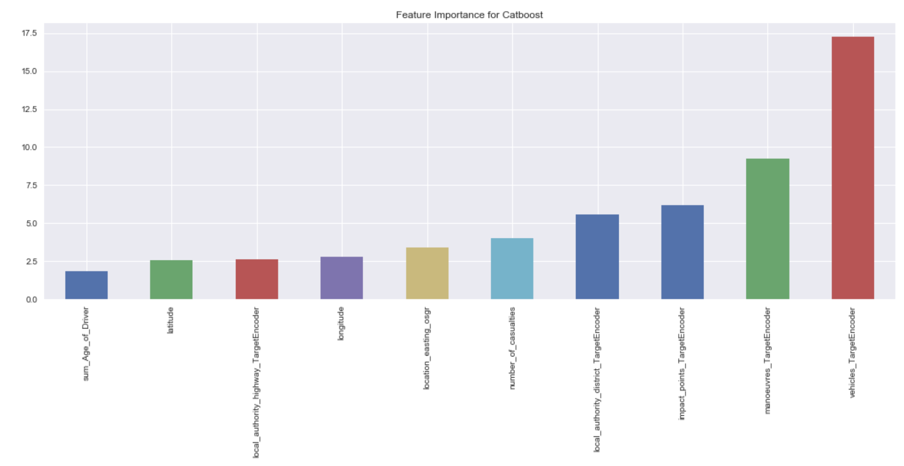

Content
Machine Learning Project life cycle
Outline
- Problem Definition
- Pre processing & Data Cleaning
- Feature Engineering
- Validation
- Loss function
- Modeling
Use case
Car accident severity predictionHack UPC challenge - Barcelona
GithubProblem Definition
Creating a Machine Learning problem

Problem Definition
Creating a Machine Learning problem
What do we need before starting to code?
- The question to resolve
- Having the data
Car accident severity prediction
- The question to resolve
How bad is an accident?
Having the data Yes, it was provided by the competition
Pre processsing & Data Cleaning

Pre processsing & Data Cleaning
What do I need to prepare before even thinking about machine learning?
The goal:
Data Quality
Outliers & Anomalies
- Remove
- Create another feature
- Winsorize

When does it make sense?
Generalized Linear Models
Dealing with memory
Sampling:
- Selecting a fraction
- Data freshness
Missing values
- MCAR: Missing completely at random
- MAR: Missing at random
- MNAR: Missing not at random
Missing values
- Hidden Nan's: Draw histogram
- Sometimes we can resconstruct
Imputation strategies:
- Mean
- Median
- Fixed value: 0,-1,999
- Many more
Our case
Tried all imputations, the best = Mean
Data Engineering

Data Engineering
Once we have our data, what can we do with it before training any model?
Our case
- Categorical Features
- Coordinates features
- Numerical Features
- Date and Time
Categorical features
- One Hot Encoding 
Categorical features
- Target Encoding
df.groupby('x0')['y'].mean()
Our case
- Vehicles in the accident
- Manouvre
- Impacts on the accident
- Type of road
- Weather conditions
Date time
- Periodical: weekdays, month
- Time since event
- Difference between dates
- Lag features
Geographical Data
Coordinates
Our case
- Geographical Encoding
- Distance from cities
Numerical data
Our case
- Frecuency encodigns
- Max/mean/min/count of age of driver
- Max/mean/min/coun number of people in vehicle
Validation

Validation
Why is validation important? Why just not skip this?
- Franz Kiraly @ Alan Turing Institute
Train test split the most similar way to real life
Temporal Split
- Expanding Window
- Slidding/roll-out window
Our case
Temporal Split

Modeling
Modeling
Choosing the right model
Metric vs loss function
- Metric is what we want to optimize
- Optimization loss is what the model optimizes.
Classification losses
What the model optimizes
- Binary Cross Entropy
- Logaritmic loss
Classification Metrics
What we want to optimize
- Accuracy/Precision
- Sensitivy/Specifity
- F1 Score
- AUC ROC
Our case
F1 Score
$$ F_{1} = 2 \cdot \frac{precision \cdot recall}{precision+recall} \\ Precision = \frac{tp}{tp +fp} \\ Recall = \frac{tp}{tp + fn} $$Loss: Binary Cross entropy
Metric: F1 Score
How to minimize F1 score?
Approaches
- Run the right model
- Pre-post process the prediction
- Write custom loss function
- Optimize another metric and run early stopping
Our case
Post process the prediction: optimal threshold
Models Used
Gradient Boosted Machines (GBM)
Gradient Boosted Machines (GBM)
